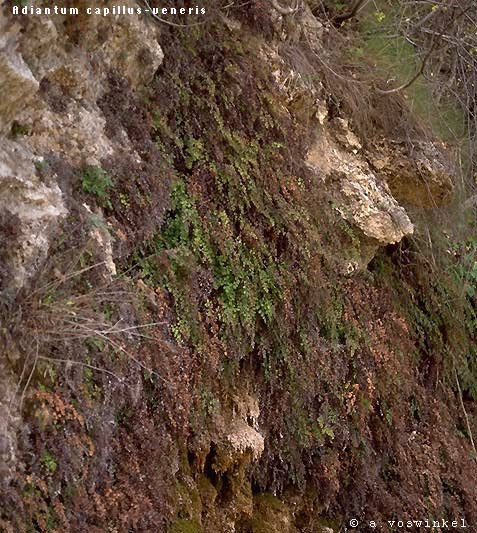
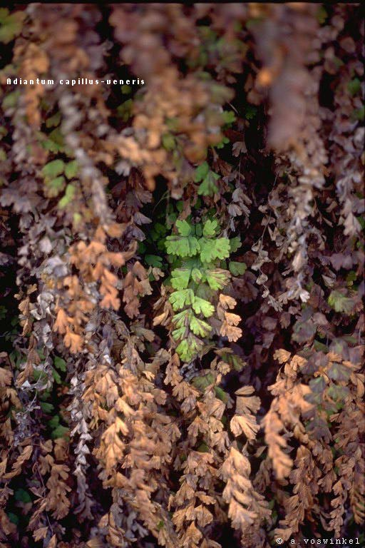
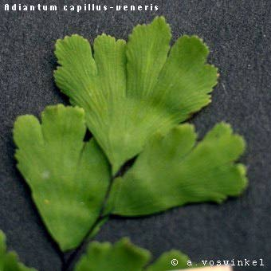

<table>
<tr>
<td>
<H2>Genus: Adiantum</H2>
<H3> Genus description: </H3> 
Rhizomes with narrow brown scales.Petioles with scales at the base only; lamina wide, pinnately compound, herbacious, glabrous; veins free.Sori in parellel linear groups of 2-10 on the lowr side of  the pinnules, along  and between the parallel veins.(Only 1 species in Europe)<P>
<STRONG><U>Species and images:</U></STRONG><P>
<UL>
<LI><A HREF="A.capillus-veneris.html">A.capillus-veneris</A> (click to see fullsize image)
<UL>
<LI><A HREF="A.capillus-veneris/1.total.jpeg">  </A>
<LI><A HREF="A.capillus-veneris/2.leave.jpeg">  
<LI><A HREF="A.capillus-veneris/3.part_of_leave.jpeg">  
</UL>
</UL>


</td>
<td>
<script type="text/javascript"><!--
google_ad_client = "pub-0748382504364839";
/* MacMerikFloraB */
google_ad_slot = "2739593908";
google_ad_width = 160;
google_ad_height = 600;
//-->
</script>
<script type="text/javascript"
src="https://pagead2.googlesyndication.com/pagead/show_ads.js">
</script>

</td>
</tr>
</table>
